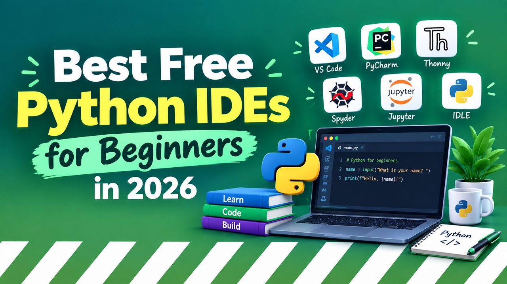

Best Free Python IDEs for Beginners in 2026
Picking your first Python IDE is the kind of decision that quietly shapes the next six months of your learning. The good news: in 2026 you cannot make a bad choice. The better news: this guide narrows it down so you can install one in the next ten minutes and get back to actually writing code.

This guide compares six free Python IDEs and editors you can install today. We look at setup time, what they feel like on day one, and what they grow into once your projects stop fitting in a single file. If you only have time to read one section, jump to Quick picks.
Quick picks
If you want one recommendation right now
Install VS Code. The Python extension turns it into a full Python IDE in two clicks. Setup time is around 10 minutes, the learning curve is gentle, and it stays useful when you outgrow it (which is rare — most developers never do). If you are on Windows or macOS, get VS Code. If you are a complete beginner who has never installed a development tool before, get Thonny instead — it ships with Python bundled.
What "beginner-friendly" actually means in 2026
Most Python tutorials from five years ago pushed two extremes: full IDEs like PyCharm (heavy, complex) or plain text editors like Notepad++ (light, but no Python smarts). In 2026 the middle ground has eaten both ends. Editors like VS Code give you IDE-level Python support with an extension, and tools like Thonny are purpose-built to be invisible until you need them.
For a beginner, three things matter most:
- Setup friction. How many clicks, downloads and "what is a path variable" conversations before you can run
print("hello")? - Day-one friendliness. Does the UI explain itself, or do you need a tutorial to find the run button?
- Growth room. Will it still be useful when your project hits five files, then fifty, then a virtual environment, then a Git repo?
Every editor below scores well on at least two of those. The right pick depends on which one matters most to you.
The shortlist
VS Code + Python extension
Free, cross-platform, light enough to run on a budget laptop. The Python extension adds debugging, linting, formatting, virtual environment support and Jupyter notebooks. Setup: ~10 minutes.
Thonny
Python bundled in the installer. Built-in variable inspector shows what your code is doing step by step. Perfect for absolute first-timers. Setup: ~3 minutes.
PyCharm Community Edition
JetBrains' free tier is a full IDE — refactoring, testing, database tools, Git. Heavier than VS Code (slower startup, more RAM). Setup: ~15 minutes.
JupyterLab
Browser-based notebook interface. Standard for data science, awkward for app development. Best learned second, not first.
Sublime Text
Insanely fast, minimal UI, Python support via packages. Free to evaluate, $99 for a license. Great if you mostly edit files rather than run code.
Replit
Code in the browser, no installation. Free tier is generous. Good for trying things out, less good for serious projects.
VS Code in detail
VS Code is what most professional Python developers use day to day, and it's the editor you'll see in 95% of YouTube tutorials. The reason it works for beginners is the same reason it works for seniors: the extension model means the editor stays simple until you turn features on.
The minimum setup:
- Install VS Code from
code.visualstudio.com. - Install Python from
python.org(the installer, not the Microsoft Store version — that one has known path issues). - Open VS Code, click the Extensions icon on the left sidebar, search "Python", install the one by Microsoft.
- Open a folder, create a file called
hello.py, typeprint("hello"), click the green triangle in the top-right.
That's it. From here, every feature is opt-in: Git integration when you're ready, debugger when your code breaks, virtual environments when you install your first third-party package.
Thonny in detail
Thonny was built by the University of Tartu specifically for teaching Python to first-time programmers. It bundles its own Python, so there is no "install Python first" step. The interface is bare. The variable inspector on the right shows you what every variable contains as your code runs — which is genuinely the fastest way to understand loops, lists and recursion.
It looks ugly. It runs on almost any computer. It will not hold your hand once your project gets serious. For your first two months of Python, Thonny is hard to beat.
PyCharm Community in detail
PyCharm is what people mean when they say "real IDE". Refactoring across a hundred files, integrated test runner, database tools, Docker support, type checking that actually catches bugs — it's all there, and most of it is in the free Community Edition.
The cost is startup time and RAM. On an older laptop, opening PyCharm for the first time feels like watching paint dry. The UI is denser than VS Code's, and the number of menus will overwhelm a beginner. Most professional Python developers eventually land on PyCharm or VS Code — but PyCharm is rarely the first editor someone learns.
JupyterLab in detail
If you are learning Python for data science, machine learning or research, Jupyter is the standard. You write code in "cells" that run independently and show their output inline — perfect for exploring data, plotting charts, and iterating on analysis.
It is a terrible choice for building applications. There is no "run the whole project" button, files have a .ipynb extension that version control tools struggle with, and debugging multi-cell notebooks is painful. Learn Python in VS Code or Thonny first. Add Jupyter when you actually need to look at data.
How to choose
Decision tree
Never installed Python before? Thonny.
Want one editor to learn and grow into? VS Code + Python extension.
Already comfortable with computers, want the most powerful free IDE? PyCharm Community Edition.
Learning Python for data science specifically? JupyterLab — but install VS Code alongside it for non-notebook work.
On a Chromebook, locked-down school laptop, or just want to try Python with zero install? Replit.
The only thing that actually matters
The IDE is the least important variable in how fast you learn Python. What matters is that you pick one, install it today, and start writing code today. Switching editors is a 30-minute job whenever you want — and you will, eventually, learn at least three.
Open this page on your phone, pick the one that matches the decision tree above, install it on your computer, and come back when you've written your first 200 lines. That's all this guide is trying to do.

RDJ Publishers
Independent web studio publishing free guides, tutorials and tools since 2026.